Get out of my way!
Last Update 2017.07.02
ここでは、大昔に作った似非シリーズを参考までに載せてみます。今見るとかなりひどいです(^-^;
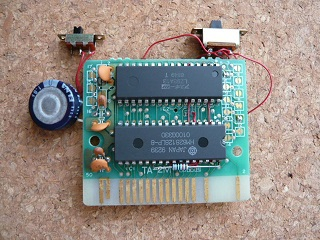
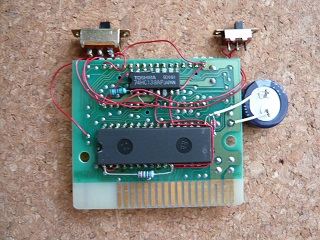
おなじみ似非RAMディスク256kB版。上にあるのはSRAM切り離しスイッチと 8k/16kバンク切り替えスイッチです。よくよく見ると基板はTAS-1Mでは無く TA-2Mのタイプですね。すっかり覚えていませんでしたが・・・。
これ以前にも2〜3台は作ったはずなのですが、あげちゃったりしたのか写真が残っていません。 これは比較的後期に作っていて細い配線で見栄えが良い方だと思います。
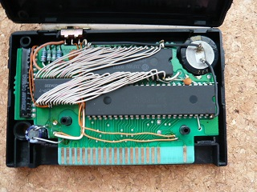
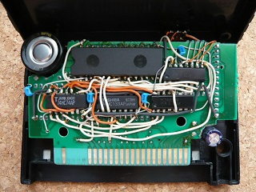
似非SCCディスク・・・512kB。上にあるのはSRAM切り離しスイッチ。 我ながら汚い(^^; 元々は256kB作ったのですが、後から小さい128kB SRAMを2個増設したために表はごちゃごちゃ。 裏は・・・配線材が太かったと言うことにしてください。。。左下のコンデンサは、音声出力 部に入れたカップリングコンデンサ。理由は・・・なんだっけ？
これもあと2台くらいは作っていた気がしますが、依頼されたものだったり、あげちゃったりした のかも知れません。
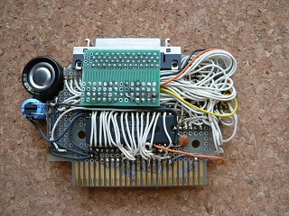
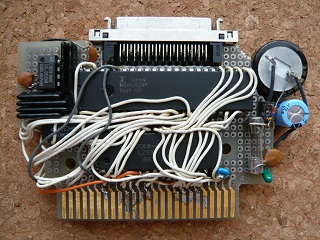
似非SCSI・・・これも配線材が太いためか基板が見えないほど汚い・・・。 普通のカートリッジのサイズに納めるように作ったため、SRAMは128kBしか 搭載していません。また、アナログGNDとデジタルGNDの分離すらしておらず、 よく動いたものです。サンハヤトの基板MCC-159も削りまくり・・・。
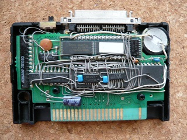
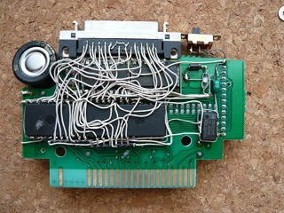
WAVE-SCSI（SCCタイプのメガコンにSCSI機能を付加したもの）。 これも普通のカートリッジサイズに収めるように作ったため、かなりごちゃごちゃ しています。配線材は細いのですが、いかんせん部品が多い。このころは4Mbit(512kB品)の SRAMが高価だったので、128kBが4個搭載された互換品を2個使って1MBのSRAMとなっています。 SCCタイプのメガコンでは1MBのSRAMに対応していないので、GALを使ってアドレスを拡張して おり、それでまた部品点数が増えています。もう一度作れと言われても無理でしょう・・・。
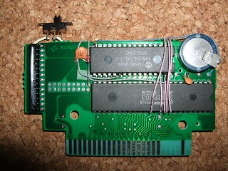
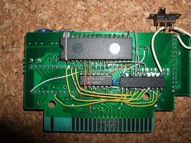
GALを使って1MBのSRAMを管理している似非SCCディスクです。
音楽の波形(WAVE)を流せるSCC付きSCSIをWAVE-SCSIと呼んでいたので、それからSCSIを取ったタイプを「うぇ〜ぶ」(WAVE)と私が個人的に呼んでいるだけです(^-^;
「うぇ〜ぶ」は「WAVE-SCSI」を作ったちょっと後に依頼されて作ったものがありました。その頃は512kBのSRAMが高くて・・・512kB＋128kBx3の896kBくらいだったような・・・。
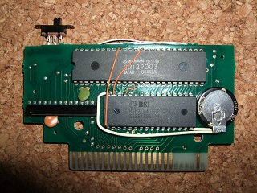
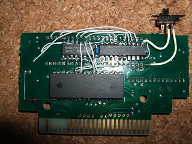
こちらは2Mbit ROM搭載のSCC付き基板を使ったものです.
2Mbit ROMは使用するSRAMと同じ32ピンなので、若干配線が少ないです。ピン配置が違うので劇的には改善しません。電気二重層コンデンサも薄型を使用しているので基板を切断することもなく、良い感じです。
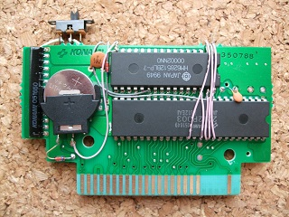
その１をリチウム電池化したものです。この位置なら基板を切らずにケースに収めることができます。
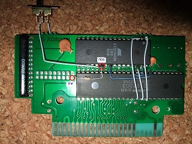
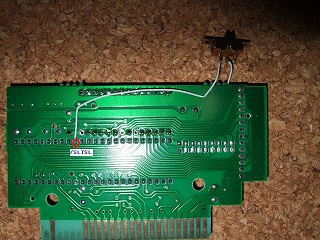
似非シリーズの従兄弟に当たる（？）MegaFlashROM SCCを作ってみました。MegaFlashROMはSRAMではなくFlashROMを使うために配線がすごく簡単です。
といっても・・・これは使うFlashROMを間違えたので、ソフトが対応しておらず使えません(^-^; ソフトを作ればいいのかもしれませんが、そこまでの気力がなく放置。AM29F040を使いましょう。
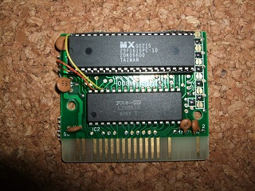
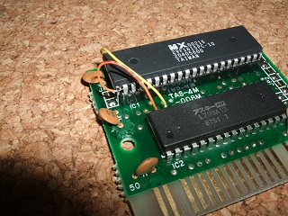
似非シリーズというよりMegaFlashROMのコンセプトで作ろうとしたものです。「Pointless Fighter」というゲームが16Mbitだったため、16MbitのMegaFlashROMを作ろうとしました。問題は・・・使ったFlashROMは書き込み時に10V供給が必要（基板の大幅な変更が必要）で、MegaFlashROMのコンセプトから外れてしまったことです。
とりあえず遊べるようにはなります。4Mbitのゲーム基板を使うと楽です。基板に載るのは40ピンのROMですが、16MbitのFlashROMは42ピンなので1ピンと42ピンがソケットからはみ出ています。追加配線は2本だけですので、取り外して書き換えるのもそれほど手間ではありません。ただ、ROMライターは40ピン以下に対応したものが多く、42ピンのFlashROMに対応したものは高めです・・・。
とりあえず動いています。
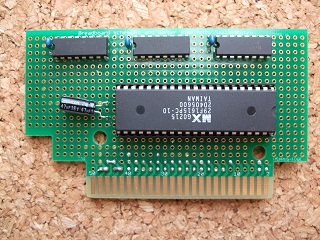
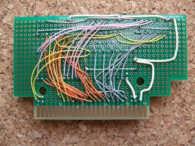
メガロムコントローラを使わずに16Mbit基板を作ろうとした時のものです。ロジック的にはHC670を使えば良いのですが、HC670(4bit長)を使うと複数のバンクレジスタを作れるのですが、初期値が不定という問題があります。ここではSuper Lode Runnnerを参考にHC161を使って実現しました。HC161(4bit長)では初期値を0にできますが、今度はHC161で作れるバンクレジスタは1個になるので、バンクレジスタの数だけHC161が必要になってしまいます。5bit以上拡張する場合はさらに倍になります。ここではバンクレジスタ一個(7bit長)を必要とするゲーム向けに作ったので2個で済んでいます。
 戻る
戻る